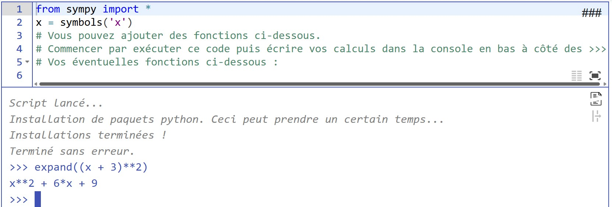

üß∏ Bac √† sable
Quatre éditeurs dans lesquels faire des essais ...
Tronquer ou non le feedback dans les terminaux (sortie standard & stacktrace / relancer le code pour appliquer)
Si activé, le texte copié dans le terminal est joint sur une seule ligne avant d'être copié dans le presse-papier
Rappels sur la 
On rappelle ci-dessous les instructions utiles du module turtle.
| Appel | Rôle |
|---|---|
hideturtle() |
Cache la tortue. |
speed(n) |
Définit la vitesse de l'animation.n est un entier entre 1 (lent) et 10 (rapide).Si n est égal à 0 la figure s'affiche instantanément |
animation(s) |
Autorise ou non les animations.s est soit 'on' (avec animations, valeur par défaut)soit 'off' (sans animations). |
penup() ou up() |
Lève le crayon : les déplacements de la tortue ne sont plus dessinés. |
pendown() ou down() |
Baisse le crayon : les déplacements de la tortue sont dessinés. |
heading() |
Renvoie la direction vers laquelle pointe la tortue sous la forme d'une mesure d'angle en degrés. |
setheading(d) |
Définit la direction vers laquelle pointe la tortue.d est une mesure d'angle en degrés. |
position() |
Renvoie la position de la tortue sous la forme d'un couple de nombres (x, y). |
goto(x, y) |
La tortue se déplace à la position (x, y).x et y sont des nombres. |
left(a) |
La tortue tourne sur elle-même vers la gauche de a degrés.a est un nombre. |
right(a) |
La tortue tourne sur elle-même vers la droite de a degrés.a est un nombre. |
forward(p) |
La tortue avance de p pixels.p est un nombre. |
color("black") |
La couleur utilisée sera le noir |
begin_fill() |
Commence le remplissage avec une couleur |
end_fill() |
Termine le remplissage avec une couleur |
###(Dés-)Active le code après la ligne
(Ctrl+I)
# Tests (insensible à la casse)(Ctrl+I)
Entrer ou sortir du mode "deux colonnes"
(Alt+: ; Ctrl pour inverser les colonnes)
(Alt+: ; Ctrl pour inverser les colonnes)
Entrer ou sortir du mode "plein écran"
(Esc)
(Esc)
Tronquer ou non le feedback dans les terminaux (sortie standard & stacktrace / relancer le code pour appliquer)
Si activé, le texte copié dans le terminal est joint sur une seule ligne avant d'être copié dans le presse-papier
Figure avec le module turtle
Votre tracé sera ici
 il est possible d'augmenter la vitesse jusqu'à
il est possible d'augmenter la vitesse jusqu'à speed(100) !
Comment utiliser sympy pour des calculs formels
Commencer par exécuter le code. Vous pourrez écrire vos calculs dans la partie console (en dessous de l'éditeur, à côté de >>>).
Par exemple :

Vous pouvez aussi définir des fonctions dans la partie éditeurs, exécuter le code, et ensuite utiliser la console :

###(Dés-)Active le code après la ligne
(Ctrl+I)
# Tests (insensible à la casse)(Ctrl+I)
Entrer ou sortir du mode "deux colonnes"
(Alt+: ; Ctrl pour inverser les colonnes)
(Alt+: ; Ctrl pour inverser les colonnes)
Entrer ou sortir du mode "plein écran"
(Esc)
(Esc)
Tronquer ou non le feedback dans les terminaux (sortie standard & stacktrace / relancer le code pour appliquer)
Si activé, le texte copié dans le terminal est joint sur une seule ligne avant d'être copié dans le presse-papier
###(Dés-)Active le code après la ligne
(Ctrl+I)
# Tests (insensible à la casse)(Ctrl+I)
Entrer ou sortir du mode "deux colonnes"
(Alt+: ; Ctrl pour inverser les colonnes)
(Alt+: ; Ctrl pour inverser les colonnes)
Entrer ou sortir du mode "plein écran"
(Esc)
(Esc)
Tronquer ou non le feedback dans les terminaux (sortie standard & stacktrace / relancer le code pour appliquer)
Si activé, le texte copié dans le terminal est joint sur une seule ligne avant d'être copié dans le presse-papier
Votre figure
Votre tracé sera ici
Crédits pour le bac à sable avec la tortue : Romain Janvier et Frédéric Zinelli
Crédits pour l'intégration de la bibliothèque sympy : Frédéric Zinelli
# Tests(insensible à la casse)(Ctrl+I)
(Alt+: ; Ctrl pour inverser les colonnes)
(Esc)